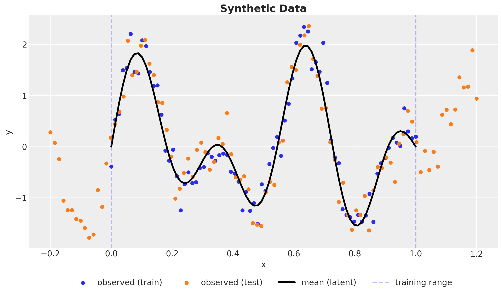
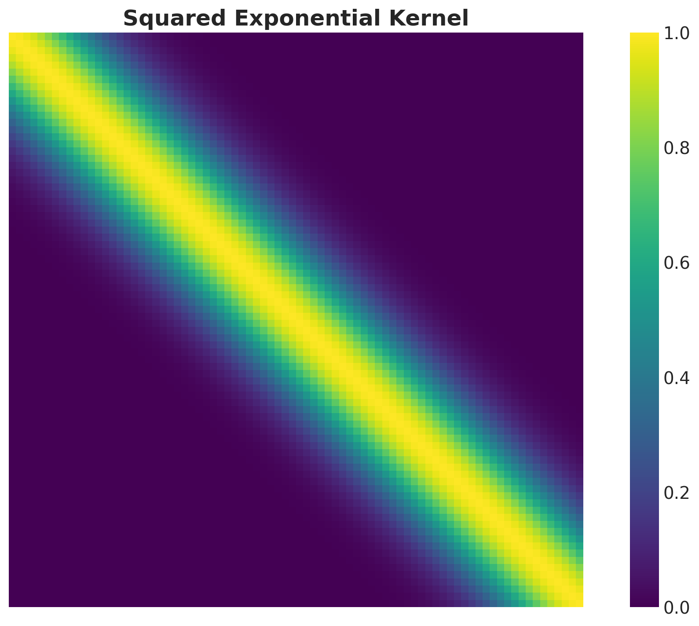
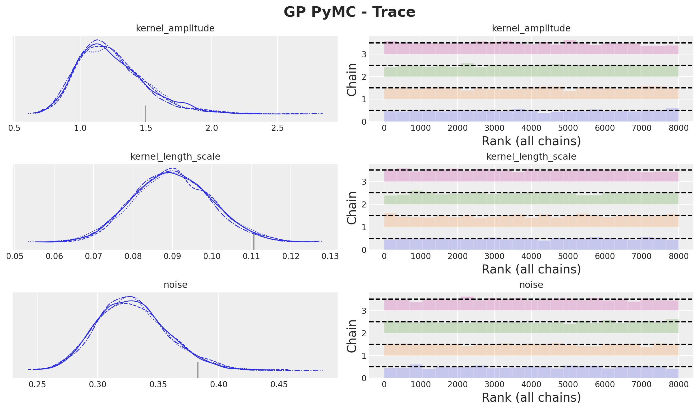
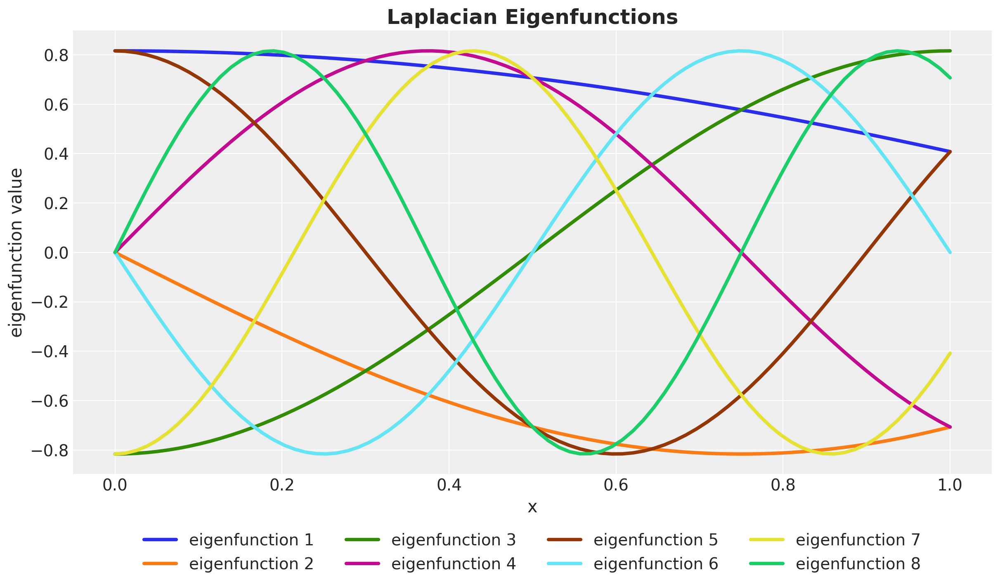
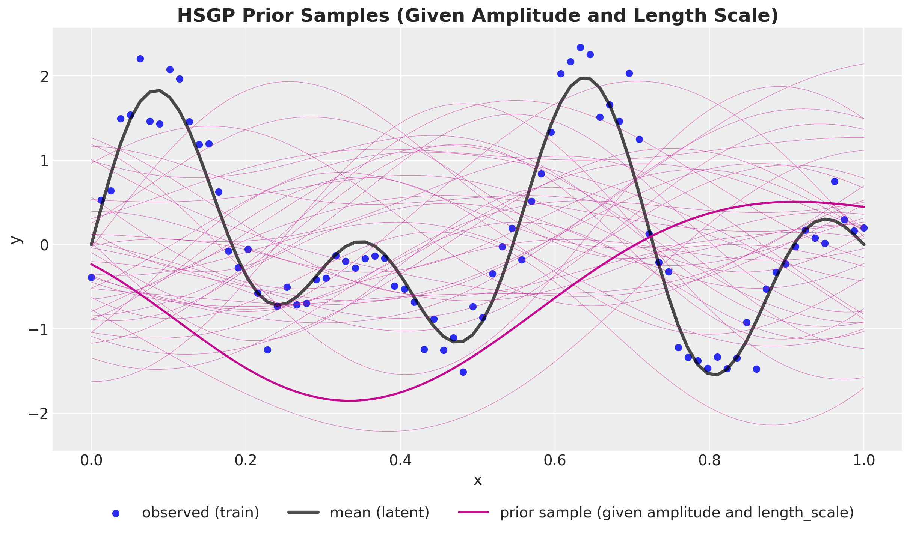

%%{init: {"theme": "white", "themeVariables": {"fontSize": "54px"}, "flowchart":{"htmlLabels": false}}}%%
flowchart TD
kernel["kernel"] --> spectral_sensity["Spectral Density"]
spectral_sensity --> polynomial["Polynomial Expansion"]
laplacian["Laplacian"] --> fourier["Fourier Transform"]
laplacian --> dirichlet["Dirichlet's BC"]
dirichlet --> spectral_decomposition["Spectral Decomposition"]
spectral_decomposition["Spectral Decomposition"] --> functional["Functional Calculus"]
polynomial --> identify_coefficients["Identify Coefficients"]
fourier --> identify_coefficients
functional --> identify_coefficients
identify_coefficients --> approximation["Approximation Formula"]
Introduction to Hilbert Spaces Approximations Gaussian Processes
A conceptual and practical viewpoint
Outline
Reference Notebook 📓
Motivation: Some Applications
Gaussian Processes
Hilbert Space Approximation Deep Dive
References
Motivation: Some Applications
Some Applications
Case Study: How popular is the President?

Some Applications
Time-Varying Regression Coefficients

Some Applications
Changes in marketing effectiveness over time

Gaussian Processes
Synthetic Data
\(y \sim \text{Normal}(\sin(4 \pi x) + \sin(7 \pi x), 0.3^2)\)
Kernel
👉 A way to encode similarity between points.
Example: Squared Exponential Kernel
\[ k(x, x') = a^ 2 \exp\left(-\frac{(x - x')^2}{2 \ell^2}\right) \]
Where \(a\) is the amplitude and \(\ell\) is the length-scale.
Note
Observe that the kernel just depends on the distance between points \(r = x - x'\). This is a property of stationary kernels.
Kernel Matrix
GP Model - Prior
Let us denote by \((x, y)\) and the training data and by \(x_{*}\) the test set for which we want to generate predictions. We define by \(f\) and \(f_*\) the latent functions for the training and test sets respectively.
\[ \left( \begin{array}{c} y \\ f_* \end{array} \right) \sim \text{MultivariateNormal}(0, \boldsymbol{K}) \]
where
\[ \boldsymbol{K} = \left( \begin{array}{cc} K(X, X) + \sigma^2_n I & K(X, X_*) \\ K(X_*, X) & K(X_*, X_*) \end{array} \right) \]
GP Model - Conditioning
\[ f_*|X, y, X_* \sim \text{MultivariateNormal}(\bar{f}_*, \text{cov}(f_*)) \]
where
\[ \begin{align*} \bar{f}_* &= K(X_*, X){\color{red}{(K(X, X) + \sigma^2_n I)^{-1}}} \\ \text{cov}(f_*) & = K(X_*, X_*) - K(X_*, X){\color{red}{(K(X, X) + \sigma^2_n I)^{-1}}} K(X, X_*) \end{align*} \]
Important
Taking the inverse of the kernel matrix is the most computationally expensive part of the GP model. It is of order \(\mathcal{O}(n^3)\).
Kernel parameter priors

GP Model in PyMC
with pm.Model() as gp_pymc_model:
x_data = pm.MutableData("x_data", value=x_train)
kernel_amplitude = pm.InverseGamma("kernel_amplitude", ...)
kernel_length_scale = pm.InverseGamma("kernel_length_scale", ...)
noise = pm.InverseGamma("noise", ...)
mean = pm.gp.mean.Zero()
cov = kernel_amplitude**2 * pm.gp.cov.ExpQuad(
input_dim=1, ls=kernel_length_scale
)
gp = pm.gp.Latent(mean_func=mean, cov_func=cov)
f = gp.prior("f", X=x_data[:, None])
pm.Normal("likelihood", mu=f, sigma=noise, observed=y_train_obs)GP Model in PyMC

GP Model - Prior Predictions

GP Model - Posterior Distributions
Out-of-Sample Predictions
conditional method
with gp_pymc_model:
x_star_data = pm.MutableData("x_star_data", x_test)
f_star = gp.conditional("f_star", x_star_data[:, None])
pm.Normal("likelihood_test", mu=f_star, sigma=noise)
gp_pymc_idata.extend(
pm.sample_posterior_predictive(
trace=gp_pymc_idata,
var_names=["f_star", "likelihood_test"],
random_seed=rng_subkey[1].item(),
)
)GP Model - Posterior Predictive

Hilbert Space Gaussian Process (HSGP) Approximation
HSGP Deep Dive
Problem with scaling Gaussian processes?
👉 Inverting the kernel matrix is computationally expensive!
Approach Summary 🤓
Strategy: Approximate the kernel matrix \(K\) with a a matrix with a smaller rank.
Key Idea: Interpret the covariance function as the kernel of a pseudo-differential operator and approximate it using Hilbert space methods.
Result: A reduced-rank approximation where the basis functions are independent of the covariance functions and their parameters (plus asymptotic convergence).
Hilbert Space Approximation
Hilbert Space Approximation
Approximation Strategy Steps
- D-Tour: Eigenvalues and Eigenvectors
- We recall the spectral density \(S(\omega)\) associated with a stationary kernel function \(k\).
- We approximate the spectral density \(S(\omega)\) as a polynomial series in \(||\omega||^2\).
- We can interpret these polynomial terms as powers of the Laplacian operator. The key observation is that the Fourier transform of the Laplacian operator is \(||\omega||^2\).
- Next, we impose Dirichlet boundary conditions on the Laplacian operator which makes it self-adjoint and with a discrete spectrum.
- We identify the expansion in (2) with the sum of powers of the Laplacian operator in the eigenbasis of (4).
- We arrive at the final approximation formula and explicitly compute the terms for the squared exponential kernel in the one-dimensional case.
Eigenvalues and Eigenvectors
Recall that given a matrix \(A\) (or a linear operator) the eigenvalues and eigenvectors are the solutions to the equation
\[A v = \lambda v\]
where \(v \neq \vec{0}\) is the eigenvector and \(\lambda\) is the eigenvalue.
The spectrum of a matrix is the set of its eigenvalues.
Example - \(2 \times 2\) Matrix
\[ A = \begin{pmatrix} 1 & 2 \\ 2 & 1 \end{pmatrix} \]
The eigenvalues are \(\lambda_1 = 3\) and \(\lambda_2 = -1\) with eigenvectors:
\[ v_1 = \frac{1}{\sqrt{2}} \begin{pmatrix} 1 \\ 1 \end{pmatrix} \quad \text{and} \quad v_2 = \frac{1}{\sqrt{2}} \begin{pmatrix} -1 \\ 1 \end{pmatrix} \]
Orthonormal Basis
\[ v_1^{T} v_2 = 0 \quad \text{and} \quad v_1^{T} v_1 = v_2^{T} v_2 = 1 \]
The Spectral Theorem
The spectral theorem states that we can always find such orthonormal basis of eigenvectors for a symmetric matrix.
Change of Basis
Observe that if we consider the change-of-basis matrix
\[ Q = \begin{pmatrix} v_1 & v_2 \end{pmatrix} \]
then we can write the matrix \(A\) in the new basis as
\[ D = Q^{T} A Q = \begin{pmatrix} 3 & 0 \\ 0 & -1 \end{pmatrix} \]
Code Example
import jax.numpy as jnp
A = jnp.array([[1.0, 2.0], [2.0, 1.0]])
# Compute eigenvalues and eigenvectors
eigenvalues, eigenvectors = jnp.linalg.eig(A)
print(f"Eigenvalues: {eigenvalues}\nEigenvectors:\n{eigenvectors}")
>> Eigenvalues: [ 3.+0.j -1.+0.j]
>> Eigenvectors:
>> [[ 0.70710678+0.j -0.70710678+0.j]
>> [ 0.70710678+0.j 0.70710678+0.j]]
# Change of basis matrix
Q = eigenvectors
Q.T @ A @ Q
>> Array([[ 3.00000000e+00+0.j, 4.44089210e-16+0.j],
[ 6.10622664e-16+0.j, -1.00000000e+00+0.j]], dtype=complex128)Spectral Projections
\[ A = \sum_{j=1}^{2} \color{red}{\lambda_i} \color{blue}{v_j v_j^{T}} \]
The operator \(P_{j} = v_j v_j ^{T}\) satisfies \(P^2 = P\) and \(P^T = P\).
Functional Calculus
The functional calculus is a generalization of the Taylor series for functions to operators. Given a function \(f\) we can define the operator \(f(A)\) as
\[ f(A) = \sum_{j=1}^{2} \color{red}{f(\lambda_j)} \color{blue}{v_j v_j^{T}} \]
Examples
- \(f(z) = z\) we recover the operator \(A\).
- \(f(z) = 1\) we get the identity operator \(I\).
- \(f(z) = z^2\) we get the operator \(A^2\).
- \(f(z) =e^{z}\) we get the operator \(\exp(A)\).
Spectral Densities
In the case a kernel function is stationary, we can use the spectral representation of the kernel function (Bochner’s theorem):
\[ k(r) = \frac{1}{(2 \pi)^{d}}\int_{\mathbb{R}^{d}} e^{i \omega^{T} r} d\mu(\omega) \]
where \(\mu\) is a positive measure. If this measure has a density, it is called the spectral density \(S(\omega)\) corresponding to the covariance function, i.e. \(d\mu(\omega) = S(\omega) d\omega\).
Spectral Density - Example
For the squared exponential kernel, it can be shown that
\[ S(\omega) = a^2(2 \pi \ell^2)^{d/2} \exp\left(-2\pi^2\ell^2\omega^2\right) \]
# d = 1
def squared_exponential_spectral_density(w, amplitude, length_scale):
c = amplitude**2 * jnp.sqrt(2 * jnp.pi) * length_scale
e = jnp.exp(-0.5 * (length_scale**2) * (w**2))
return c * eNote the similarity between the spectral density and the Fourier transform. For Gaussian-like kernels, like the squared exponential, we expect the associated spectral density to also be Gaussian-like.
\(S(\omega)\) Squared Exponential

Formal Power Expansion of the Spectral Density
Let us assume the kernel function is isotropic, i.e. it just depends on the Euclidean norm \(||r||\).
\(S(\omega)\) is also isotropic.
Write \(S(||\omega||) = \psi(||\omega||^2)\) for a suitable function \(\psi\).
We can expand \(\psi\) (Taylor-like expansion)
\[ \begin{align*} \psi(||\omega||^2) = a_0 + a_1 (||\omega||^2) + a_2 (||\omega||^2)^2 + a_3 (||\omega||^2)^3 + \cdots \end{align*} \]
The Laplace Operator
Recall the Laplace operator is defined as
\[ - \nabla^2 f = \sum_{i=1}^{d} \frac{\partial^2 f}{\partial x_i^2} \]
Properties
The Laplacian has many good properties:
Positive semi-definite
Elliptic
Self-adjoint (appropriate boundary conditions)*
Kernel as a function of \(\nabla^2\)
One can verify that the Fourier transform of the Laplacian is
\[ \mathcal{F}[\nabla^2 f](\omega) = - ||\omega||^2 \mathcal{F}[f] \]
Formal expansion as powers of the Laplacian
We can write the integral operator associated with the kernel
\[ \mathcal{K} := \int_{\mathbb{R}^d} k(\cdot, x')f(x') dx' \]
as
\[ \mathcal{K} = a_0 + a_1 (- \nabla^2) + a_2 (-\nabla^2)^2 - a_3 (-\nabla^2)^3 + \cdots \]
Dirichlet’s Laplacian - Spectrum
Dirichlet boundary conditions: Only consider function vanishes on the boundary of the domain \(\Omega\).
It is is a self-adjoint operator defined on the Hilbert space \(L^{2}(\Omega)\) equipped with the Lebesgue measure. That is,
\[ \int_{\Omega} {\color{purple}{(-\nabla^2 f(x))}} g(x) dx = \int_{\Omega} f(x) {\color{purple}{(-\nabla^2 g(x))}} dx \]
It has discrete spectrum with eigenvalues \({\color{red}{\lambda_j}} \rightarrow \infty\) and eigenfunctions \(\color{blue}{\phi_j}\) that form an orthonormal basis of \(L^2(\Omega)\)
Example - \(\Omega = [-L, L] \subset \mathbb{R}\)
\[ \frac{d^2 \phi}{dx^2} = - \lambda \phi \quad \text{with} \quad \phi(-L) = \phi(L) = 0 \]
Spectrum
\[ \phi_j(x) = \sqrt{\frac{1}{L}} \sin\left(\frac{\pi j (x + L)}{2L}\right) \quad \text{and} \quad \lambda_j = \left(\frac{j \pi}{2L}\right)^2 \quad \text{for} \: j = 1, 2, \ldots \]
Laplace Eigenfunctions
HSGP: Functional Calculus
\[ -\nabla^2 f(x) = \int_{\Omega} \overbrace{\left[\sum_{j} \lambda_{j} \phi_{j}(x) \phi_{j}(x')\right]}^{l(x, x')} f(x') dx' \]
We can construct powers of \(-\nabla^2\) as
\[ (- \nabla^2)^{s} f(x) = \int_{\Omega} \color{red}{\overbrace{\left[\sum_{j} \lambda_{j}^{s} \phi_{j}(x) \phi_{j}(x')\right]}^{l^s(x, x')}} f(x') dx'. \]
HSGP: Coefficients Identification
Use the formal expansion of \(\mathcal{K}\) in terms of powers of \(\nabla^2\):
\[ \begin{align*} & \left[ a_{0} + a_{1}(-\nabla^2) + a_{2}(-\nabla^2)^2 + \cdots \right]f(x) = \\ &\int_{\Omega} \left[a_{0} + a_{1} l(x, x') + a_{2} l^{2}(x, x') + \cdots \right] f(x') dx' \end{align*} \]
This implies we can approximate the kernel as
\[ \begin{align*} k(x, x') \approx & \: a_{0} + a_{1} l(x, x') + a_{2} l^{2}(x, x') + \cdots \\ \approx & \sum_{j} \color{red}{\underbrace{\left[ a_{0} + a_{1} \lambda_{j} + a_{2} \lambda_{j}^2 + \cdots \right]}_{S(\sqrt{\lambda_{j}})}} \phi_{j}(x) \phi_{j}(x') \end{align*} \]
HSGP: Final Formula
In summary, we have the following approximation formula for the kernel function:
\[ \boxed{ k(x, x') \approx \sum_{j}^{m} \color{red}{S(\sqrt{\lambda_j})}\color{blue}{\phi_{j}(x) \phi_{j}(x')} } \]
That is, the model of the Gaussian process \(f\) can be written as
\[ f(x) \sim \text{MultivariateNormal}(\boldsymbol{\mu}, \Phi\mathcal{D}\Phi^{T}) \]
where \(\mathcal{D} = \text{diag}(S(\sqrt{\lambda_1}), S(\sqrt{\lambda_2}), \ldots, S(\sqrt{\lambda_{m}}))\).
HSGP: Linear Model
\[ f(x) \approx \sum_{j = 1}^{m} \overbrace{\color{red}{\left(S(\sqrt{\lambda_j})\right)^{1/2}}}^{\text{all hyperparameters are here!}} \times \underbrace{\color{blue}{\phi_{j}(x)}}_{\text{easy to compute!}} \times \overbrace{\color{green}{\beta_{j}}}^{\sim \: \text{Normal}(0,1)} \]
Note
The only dependence on the hyperparameters is through the spectral density.
Computational Cost
The computational cost of evaluating the log posterior density of univariate HSGPs scales as \(\mathcal{O}(nm + m)\).
Squared Exponential \(1\)-dim
\[ \begin{align*} k(x, x') \approx \sum_{j=1}^{m} & \color{red}{\overbrace{\left(a^2 \sqrt{2 \pi} \ell \exp\left(-2\pi^2\ell^2 \left(\frac{\pi j}{2L}\right)^2 \right)\right)^{1/2}}^{\left(S(\sqrt{\lambda_j})\right)^{1/2}}} \\ & \times \color{blue}{\overbrace{\left(\sqrt{\frac{1}{L}} \sin\left(\frac{\pi j (x + L)}{2L}\right)\right)}^{\phi_{j}(x)}} \\ & \times \color{green}{\overbrace{\beta_{j}}^{\sim \: \text{Normal}(0, 1)}} \end{align*} \]
Hilbert Space Approximation (Recap)
%%{init: {"theme": "white", "themeVariables": {"fontSize": "54px"}, "flowchart":{"htmlLabels":false}}}%%
flowchart TD
kernel["kernel"] --> spectral_sensity["Spectral Density"]
spectral_sensity --> polynomial["Polynomial Expansion"]
laplacian["Laplacian"] --> fourier["Fourier Transform"]
laplacian --> dirichlet["Dirichlet's BC"]
dirichlet --> spectral_decomposition["Spectral Decomposition"]
spectral_decomposition["Spectral Decomposition"] --> functional["Functional Calculus"]
polynomial --> identify_coefficients["Identify Coefficients"]
fourier --> identify_coefficients
functional --> identify_coefficients
identify_coefficients --> approximation["Approximation Formula"]
Prior Predictive
NumPyro Implementation
def hs_approx_squared_exponential_ncp(x, amplitude, length_scale, l_max, m):
phi = laplace_eigenfunctions(x, l_max, m)
spd = jnp.sqrt(
diag_squared_exponential_spectral_density(amplitude, length_scale, l_max, m)
)
with numpyro.plate("basis", m):
beta = numpyro.sample("beta", dist.Normal(0, 1))
return numpyro.deterministic("f", phi @ (spd * beta))
def hsgp_model(x, l_max, m, y=None) -> None:
# --- Priors ---
kernel_amplitude = numpyro.sample("kernel_amplitude", ...)
kernel_length_scale = numpyro.sample( "kernel_length_scale", ...)
noise = numpyro.sample( "noise", ...)
# --- Parametrization ---
f = hs_approx_squared_exponential_ncp(
x, kernel_amplitude, kernel_length_scale, l_max, m
)
# --- Likelihood ---
with numpyro.plate("data", x.shape[0]):
numpyro.sample("likelihood", dist.Normal(loc=f, scale=noise), obs=y)HSGP Model - Posterior

HSGP Model - Posterior Predictive

PyMC Implementation
HSGP Class
with pm.Model() as hsgp_pymc_model:
x_data = pm.MutableData("x_data", value=x_train)
y_data = pm.MutableData("y_data", y_train_obs)
kernel_amplitude = pm.InverseGamma("kernel_amplitude", ...)
kernel_length_scale = pm.InverseGamma("kernel_length_scale", ...)
noise = pm.InverseGamma("noise", ...)
mean = pm.gp.mean.Zero()
cov = kernel_amplitude**2 * pm.gp.cov.ExpQuad(
input_dim=1, ls=kernel_length_scale
)
gp = pm.gp.HSGP(m=[20], L=[1.3], mean_func=mean, cov_func=cov)
f = gp.prior("f", X=x_data[:, None])
pm.Normal("likelihood", mu=f, sigma=noise, observed=y_data)Out-of-Sample Predictions
conditional method
with hsgp_pymc_model:
x_star_data = pm.MutableData("x_star_data", x_test)
f_star = gp.conditional("f_star", x_star_data[:, None])
pm.set_data({"x_data": x_test, "y_data": np.ones_like(x_test)})
hsgp_pymc_idata.extend(
pm.sample_posterior_predictive(
trace=hsgp_pymc_idata,
var_names=["f_star", "likelihood"],
random_seed=rng_subkey[1].item(),
)
)HSGP Model - Posterior Predictive

PyMC Implementation
HSGP.prior_linearized
with pm.Model() as hsgp_linearized_pymc_model:
x_data = pm.MutableData("x_data", value=x_train)
y_data = pm.MutableData("y_data", y_train_obs)
kernel_amplitude = pm.InverseGamma("kernel_amplitude", ...)
kernel_length_scale = pm.InverseGamma("kernel_length_scale", ...)
noise = pm.InverseGamma("noise", ...)
mean = pm.gp.mean.Zero()
cov = kernel_amplitude**2 * pm.gp.cov.ExpQuad(input_dim=1, ls=kernel_length_scale)
gp = pm.gp.HSGP(m=[20], L=[1.3], mean_func=mean, cov_func=cov)
phi, sqrt_psd = gp.prior_linearized(Xs=x_data_centered[:, None])
beta = pm.Normal("beta", mu=0, sigma=1, size=gp._m_star)
f = pm.Deterministic("f", phi @ (beta * sqrt_psd))
pm.Normal("likelihood", mu=f, sigma=noise, observed=y_data)Out-of-Sample Predictions
pm.set_data method
References
Gaussian Processes
- Gaussian Processes for Machine Learning, classic book on GPs.
- PyMC Examples: Mean and Covariance Functions
- Bayesian Regression as a Gaussian Process
- An Introduction to Gaussian Process Regression
- Robust Gaussian Process Modeling, very complete introduction to GPs.
- Dan Simpson’s Blog, many posts on GPs and prior selection.
HSGP Approximation
References
Birthdays Dataset
- Bayesian workflow book - Birthdays
- NumPyro Example: Hilbert space approximation for Gaussian processes
- Time Series Modeling with HSGP: Baby Births Example
Spectral Theory
Thank you!